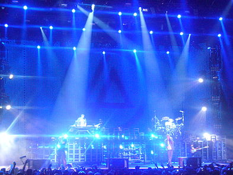

«The Catalyst» —en español: «El catalizador»— es una
canción grabada e interpretada por la banda estadounidense
Linkin Park, es el primer sencillo del cuarto álbum de
estudio A Thousand Suns. La canción se estrenó en los
radios el 2 de agosto de 2010. El sencillo se ofreció
como un remix para que los fanes pudieran dar sus propias
características a la canción.
Reanimation
Reanimation es una mezcla de sonidos generados en el primer álbum de
Linkin Park, Hybrid Theory. Grabado durante la gira del 2001,
contiene canciones modificadas de su primer álbum con algunos
efectos de llamada que son continuaciones a los siguientes temas.
El título de las canciones proviene de un juego de palabras basado
en los títulos originales de cada canción. Por ejemplo, en
«Points of Authority» – «Pts.Of.Athrty»; «Crawling» – «Krwlng»; e
tc., (el primer título es el título de la canción original y el
segundo título es el de la mezcla de Reanimation).
Meteora (2002-2004)

Tras Hybrid Theory y Reanimaton, Linkin Park continuó realizando conciertos en Estados Unidos, y al mismo tiempo comenzaron a trabajar en su
próximo material en el autobús de su gira en un horario ajustado y también en su tiempo libre.8051 La banda trabajó casi todo el año 2002 y
finalmente en diciembre de ese año se anunció oficialmente la producción de su nuevo disco de estudio: Meteora.51 De acuerdo con la banda,
para el nombre del mismo se inspiraron en la región rocosa de Meteora, en Grecia, donde están construidos numerosos monasterios encima de las
piedras. Musicalmente este álbum se asemeja a su anterior trabajo, Hybrid Theory, sin embargo este disco se diferenció por la incorporación de
novedosos instrumentos como el uso de un shakuhachi (una flauta japonesa hecha de bambú), y nuevos efectos de sonido.
El productor de Meteora fue una vez más Don Gilmore.84 El segundo álbum se lanzó mundialmente el 25 de marzo de 2003. El día de su publicación
ganó reconocimiento mundial, siendo número uno en Estados Unidos y Reino Unido y número dos en Australia.86 La banda vendió 810 000 copias en su
primera semana de acuerdo a SoundScan y está considerado como el álbum más vendido en la lista Billboard en ese momento.87388 «Somewhere I Belong»,
primer sencillo de Meteora, ocupó el primer puesto de la lista Alternative Songs y en el conteo Mainstream Rock Tracks de Billboard.8925 Los sencillos
«Breaking the Habit», «Faint» y «Numb» recibieron una importante atención por parte de la radio.49 Para octubre del 2003, Meteora logró vender 3
millones de copias.90 El éxito conseguido le permitió a Linkin Park el llevar a cabo un segundo Projekt Revolution, gira que contó con artistas,
como Mudvayne, Blindside y Xzibit,6651 en julio de ese año Chester fue hospitalizado a causa de dolores abdominales por lo que la banda se vio
obligada a cancelar doce fechas de su gira por Europa,91 al mes siguiente, la banda Metallica invitó a Linkin Park al Summer Sanitarium Tour en 2003.
A finales de ese año publicaron su álbum en directo titulado Live in Texas, el cual contiene las actuaciones en vivo de la banda en Texas durante esta
gira.9394 A principios de 2004, Linkin Park inició una gira mundial titulada Meteora World Tour que incluyó a Hoobastank, POD y Story of the Year como
grupos de apoyo.
Este video fue utilizado como Sountrack del videojuego Medal of Honor
The trailer starts off with a cinematic taking place during the mission Compromised as Rabbit and the rest of AFO Team Neptune run down a hill run from the Taliban. An RPG is then fired towards them as the trailer cuts to the title screen of the game, followed by the name of Linkin Park being shown in the same manner.
The live-action part of the trailer starts off with Dusty driving to a hotel in a small town in Afghanistan. He then enters a room, where he lays out all his gear on a table and prepares himself for the day ahead. After getting ready, packed up and all, he heads for the door. However, a Taliban insurgent fires his RPG on the window near the door, blowing Dusty back. He then experiences flashbacks of himself when he was younger, such as being shown the Congressional Medal of Honor that one of his relatives had received, joining the military, and getting promoted to being a part of the Delta Force. He is then picked up by Mother, who helps him get to their escape vehicle, a pickup truck being driven by an unnamed operator. The three operators are able to escape the town away from all the Taliban attacking them, and drive off into the country before the trailer ends.
The in-game parts of the trailer feature cinematics and gameplay that were not shown in the game's previous trailers, showing off missions such as Breaking Bagram and Rescue the Rescuers.
In the End
«In the End» (en español: «En el final») es el cuarto y último sencillo de Hybrid Theory, primer álbum de estudio
de Linkin Park. Con esta canción alcanzaron el reconocimiento internacional, posicionándose en los primeros lugares
en las listas de todo el mundo. La canción fue generalmente muy bien recibida por críticos de rock contemporáneo.
La canción representa en parte el estilo de musical del grupo, con una parte melódica interpretada por Chester Bennington y una parte de rap interpretada por Mike Shinoda. Por su potencia y adrenalina, fue utilizada como trasfondo de infinidad de videos de acción o heroísmo, sin embargo, su letra la vuelve en realidad una canción de desamor. Su estribillo suena "I tried so hard and got so far, but in the end it doesn't even matter" (Lo intenté tanto y llegué tan lejos pero al final, eso no importó).
Su nombre en la versión del álbum 2002 fue llamada "ENTH E ND", la cual es un remix que fue hecho por hiroito con Motion Man. Luego en el 2004, en el álbum Collision Course junto a Jay-Z, se realizó la mezcla entre su canción, "Izzo", junto a "In the End", ocupando la pista 5.
Se realizaron varios covers de ésta canción, como Apologet11, que realizó una parodia de la canción o Andre the Giant, banda italiana que también intentó copiarlos pero con mucha más electrónica que la original.
En abril de 2014, la emisora de rock colombiana Radioacktiva realizó un top 100 de la década 2000 y In The End fue la número 1. Según la emisora la canción de la década.